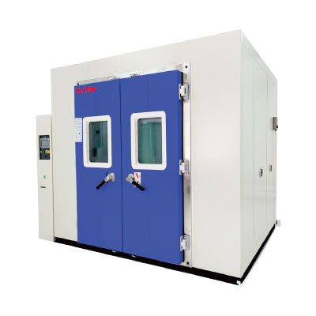
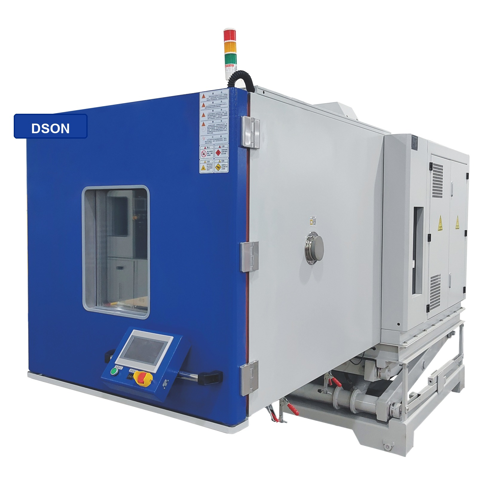
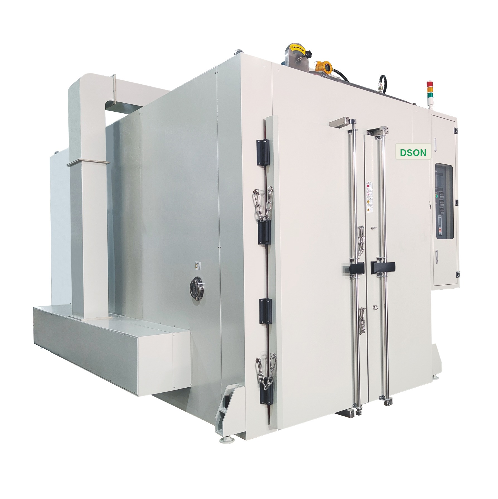
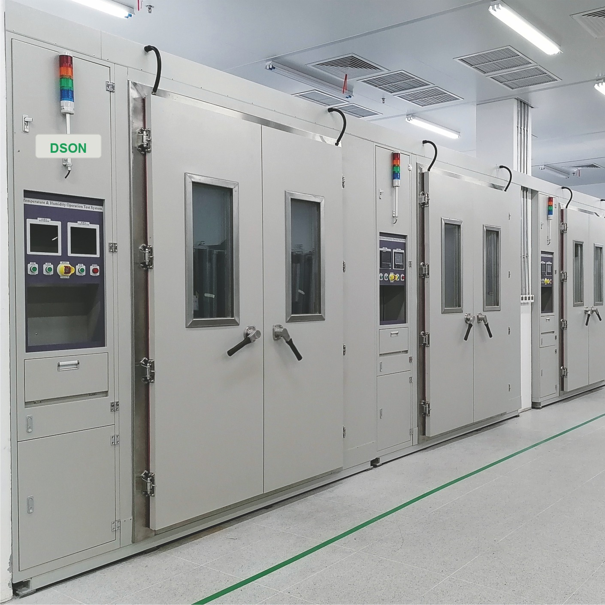
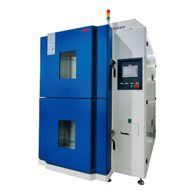
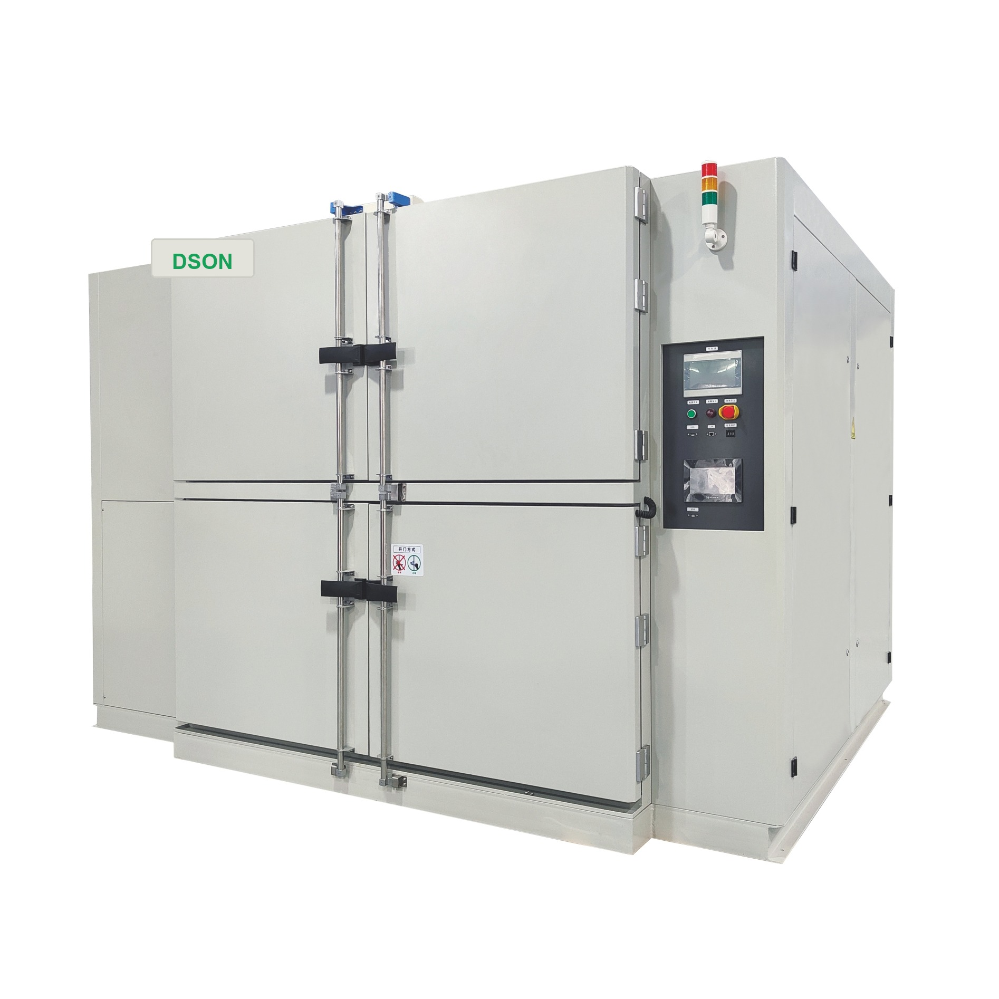

ABOUT US
東莞市得聲試驗儀器設備有限公司
得聲立足東莞製造腹地，提供自有品牌環境試驗儀器設備與測試方案整合。 公司服務範圍涵蓋高低溫試驗箱、濕熱試驗箱、冷熱衝擊試驗箱、 步入式試驗室與客製化綜合測試系統，可依不同應用場景提供穩定且具延展性的交付方案。
我們重視設備性能、品質追溯、供應鏈協同與客戶服務，致力於成為電子製造、 汽車、科研與新能源相關客戶可信賴的長期合作夥伴。
公司簡介
以自有品牌環境試驗設備與可靠性驗證方案為核心，提供工程導向的交付服務。
品質理念
從選型、供應鏈協同到出貨建立多層檢驗節點，強化設備穩定性與一致性。
合作文化
以回應速度、技術協作與準時交付為原則，降低客戶導入風險。
Manufacturing Snapshot
從方案確認到交付驗證
- 客製化設備方案評估
- 自有品牌設備選型與定制
- 功能測試與性能校驗
- 交付培訓與售後支持
PRODUCT CENTER
產品中心

機台展示位高低溫試驗箱
適用於電子元件、材料與整機產品的耐高低溫性能測試。

機台展示位恆溫恆濕試驗箱
用於溫濕度循環環境模擬，滿足可靠性與穩定性驗證需求。

機台展示位冷熱衝擊試驗箱
支持快速溫度切換測試，用於評估材料與結構的耐衝擊能力。

機台展示位步入式環境試驗室
適合大型工件、整機與批量樣品的環境模擬與可靠性測試。

機台展示位綜合環境試驗系統
結合溫度、濕度、振動等多種條件，支持複合型測試場景。

機台展示位非標客製化設備
依據試驗要求、場地條件與產品尺寸，導入專屬測試設備方案。
SPECIFICATION
產品型號與規格資料
以下依據公司產品型錄資料整理，涵蓋步入式恒温恒湿室 DATH 系列與 冷热冲击试验机 DLCT 系列。實際配置可依測試標準、樣品尺寸、場地條件與供電條件定制。
步入式恒温恒湿室 DATH 系列
DATH-A / DATH-B / DATH-C / DATH-D 系列，適用於整機、批量樣品與大型工件的溫濕度環境模擬。
| 型號 | 內箱尺寸 W×D×H | 外箱尺寸 W×D×H | 低溫 | 升溫/降溫速率 | 220V 三相電流 |
|---|---|---|---|---|---|
| DATH-A1 | 208 × 203 × 210 cm | 330 × 225 × 242 cm | -10℃ | 60 / 60 ℃/min | 65A |
| DATH-A2 | 208 × 203 × 210 cm | 330 × 225 × 242 cm | -20℃ | 60 / 60 ℃/min | 70A |
| DATH-A4 | 200 × 195 × 210 cm | 330 × 225 × 252 cm | -40℃ | 60 / 120 ℃/min | 65A |
| DATH-B1 | 298 × 203 × 210 cm | 420 × 225 × 242 cm | -10℃ | 60 / 60 ℃/min | 90A |
| DATH-B2 | 290 × 203 × 210 cm | 420 × 225 × 242 cm | -20℃ | 60 / 60 ℃/min | 100A |
| DATH-B4 | 290 × 195 × 210 cm | 440 × 225 × 252 cm | -40℃ | 60 / 120 ℃/min | 110A |
| DATH-C1 | 380 × 203 × 210 cm | 510 × 225 × 242 cm | -10℃ | 60 / 60 ℃/min | 110A |
| DATH-C2 | 388 × 203 × 210 cm | 510 × 225 × 242 cm | -20℃ | 60 / 60 ℃/min | 115A |
| DATH-C4 | 380 × 195 × 210 cm | 540 × 315 × 252 cm | -40℃ | 60 / 120 ℃/min | 140A |
| DATH-D1 | 388 × 293 × 210 cm | 510 × 315 × 242 cm | -10℃ | 60 / 60 ℃/min | 160A |
| DATH-D2 | 388 × 293 × 210 cm | 510 × 315 × 242 cm | -20℃ | 60 / 60 ℃/min | 170A |
| DATH-D4 | 388 × 293 × 210 cm | 540 × 315 × 252 cm | -40℃ | 60 / 120 ℃/min | 215A |
共通規格
- 高溫範圍：80℃；濕度範圍：20%RH ~ 95%RH
- 水冷式冷卻，PU 發泡保溫層 110mm / 150mm
- 內箱 SUS#304 不鏽鋼，外箱彩色烤漆鋼板
- 單門設計，門尺寸約 85W × 180H cm
控制與保護
- TATO-2011 觸控面板，PT100 × 3 感溫器
- P.I.D + P.L.C + A/D + S.S.R 控制模式
- 具備漏電、突波、錯相、超溫與控制器上下限等保護
冷热冲击试验机 DLCT 系列
二箱移動式 / 兩箱式結構，適用於材料、電子元件、連接器、電路板與整機的快速溫度衝擊測試。
| 型號 | 內箱尺寸 | 外箱尺寸 | 滿載電流 MAX | 功率 | 水塔 | 水管出口 |
|---|---|---|---|---|---|---|
| DLCT-B2 / B3 | 40 × 40 × 30 cm | 136 × 192 × 205 cm | 220V 3相 61A / 380V 3相 35A | 23.1KW | 8噸 | 1 1/2 英寸 |
| DLCT-B4 | 40 × 40 × 30 cm | 136 × 192 × 205 cm | 220V 3相 70A / 380V 3相 40A | 26.4KW | 10噸 | 1 1/2 英寸 |
| DLCT-C2 / C3 | 50 × 50 × 30 cm | 146 × 230 × 220 cm | 220V 3相 96A / 380V 3相 55A | 36.3KW | 15噸 | 2 英寸 |
| DLCT-C4 | 50 × 50 × 30 cm | 146 × 230 × 220 cm | 220V 3相 105A / 380V 3相 60A | 39.6KW | 15噸 | 2 英寸 |
| DLCT-D2 | 60 × 60 × 30 cm | 162 × 232 × 220 cm | 220V 3相 96A / 380V 3相 55A | 36.3KW | 15噸 | 2 英寸 |
| DLCT-D3 | 60 × 60 × 30 cm | 162 × 232 × 220 cm | 220V 3相 105A / 380V 3相 60A | 39.6KW | 15噸 | 2 英寸 |
| DLCT-D4 | 60 × 60 × 30 cm | 162 × 232 × 220 cm | 220V 3相 110A / 380V 3相 63A | 41.6KW | 15噸 | 2 英寸 |
機構與材料
- 雙室設計，可配置熱室或冷室
- 強力氣體驅動阻尼器 Damper Device
- 內箱 SUS#304 不鏽鋼，外箱不鏽鋼表面處理
- 測試籃採不鏽鋼網架或板件結構
- 二元式 Cascade Refrigeration System，水冷方式
溫度與回復能力
- 環境溫度：5℃ ~ 30℃
- 預熱溫度：+60℃ ~ +200℃
- 預冷溫度：-10℃ ~ -60℃ / -10℃ ~ -80℃
- 高溫衝擊：+60℃ ~ +150℃
- 低溫衝擊：-10℃ ~ -40℃ / -55℃ / -65℃
- 溫度均勻度：±2℃
控制與記錄
- 7寸 800 × 600 彩色 LCD 觸控控制器，中英文操作介面
- PT100 × 3 感溫器，P.I.D + P.L.C + A/D + S.S.R 控制
- 支援程序設定、故障報警、循環測試與資料記錄
- 可依需求配置通訊、記錄與斷電記憶功能
適用標準
- MIL-STD-883E Method No.1010.7
- JIS C0025、IEC 68-2-14、GB2423.22
- IPC 2.6.7、Bellcore GR-1221-CORE
- JESD22 A104-A
以上規格可依實際需求與配置調整，請以正式報價書及技術協議為準。
WHY DSON
核心優勢
製程穩定
建立標準化作業流程與關鍵工序管控，降低批次差異與返工風險。
品質追溯
從物料到出貨保留必要紀錄，便於專案管理、品質分析與售後支持。
協同開發
支持工程對接、樣品調整與小批量驗證，讓產品更快完成量產轉化。
交付效率
以回應速度與交期意識為核心，通過穩定供應鏈協同提升交付確定性。
QUALIFICATION
資質證書
品質管理體系
用於展示公司品質管理相關體系文件與內部標準化能力。
材料合規管理
用於展示設備材料合規要求與零部件供應配合能力。
功能與可靠性測試
可放置設備測試報告、抽檢記錄或第三方驗證資訊。
客戶專案管理
適合呈現專案交付流程、文件控管與定制合作能力。
LATEST NEWS
新聞資訊
公司動態
得聲持續強化自有品牌環境試驗設備交付能力
圍繞設備選型、供應鏈協同、快速方案回應與設備品質需求，持續優化交付流程。
產業觀察
可靠性測試需求升溫，試驗設備更重視穩定性與可定制性
面對多樣化測試需求，供應商的技術溝通效率與設備一致性正成為核心競爭力。
技術分享
如何在設備選型階段提前降低後續驗證風險
建議從試驗條件、樣品尺寸、控制精度與後續維護四個方向同步評估。
CONTACT US
歡迎洽詢合作
如果你正在尋找可靠的環境試驗設備與客製化測試合作夥伴， 得聲可配合方案評估、自有品牌設備導入與長期售後支持規劃。